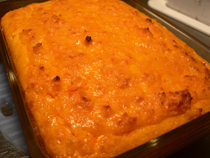

Carrot pudding
Carrot pudding
One nice thing about cooking regularly is that you end up trying odd little recipes that wouldn’t feel appropriate for a rare night in the kitchen. On nights like that, you choose salmon, steak, asparagus, and other showy, expensive items. You’d probably never flip through a book like Richard Olney’s and choose, for example, a carrot pudding, because what the hell kind of recipe is that? As I slowly work my way through this book, I’m finding time for many recipes that sound unremarkable but that turn out wonderfully, especially his vegetable dishes, which have all been hearty and flavorful. (I’m actually making his cabbage loaf as I write this post!)

If you own a food processor with a shredding disk, or some other contraption that will make quick work of grating carrots, you have to try this. It’s honestly the best preparation of carrots I’ve ever had, and it makes a delicious, interesting side dish next to a salty meat. It would also make a nice lunch, or even breakfast, and I bet it tastes good cold.
I halved the recipe without incident.
Julienne de carottes au gratin
2 pounds carrots, peeled and coarsely grated
1/3 cup butter
Juice of 1/2 lemon
Salt
1 teaspoon sugar
1.5 cups heavy cream
3 eggs
Pepper
Combine the carrots with the butter, lemon juice, salt, and sugar in a saucepan. Add water to cover, bring to a boil, and then simmer, covered, for 30 minutes. Remove the cover, turn the flame up to high, and stir until all of the moisture evaporates (all of it—this takes a good ten minutes). Allow to cool for ten minutes. Whisk the cream and eggs with some peppper, and mix this with the carrots. Pour into a buttered baking dish, and bake for 35 minutes or until swelled and brown.
Comments
I got a set of souffle dishes for my first wedding and when we got back from the honeymoon the first thing we made was a carrot souffle, not unlike this pudding except for separating the eggs and beating the whites.
what’s the texture like? are the carrots mooshie?
I bet a little maple syrup in (or on top) of this would be amazing. I love maple glazed carrots.
Once upon a time, I began to ponder the origins of carrot cake and my aunt found a recipe similar to this one that was supposed to be colonial American . . .
“what the hell kind of recipe is that”
HA HA HA!
Did I post something about how my aunt told me that carrot pudding was some sort of American colonial dish?
And how Martha’s brownies reminded me of Sachertorte?
Well, I meant to.
soft, carrot-based food: perfect.
i WILL be trying this.
up with puddings!
Add a comment